3. Visualizing Facial Expressions#
written by Eshin Jolly
In this tutorial we’ll explore plotting in Py-Feat using functions from the feat.plotting module along with plotting methods using the Fex data class. You can try it out interactively in Google Collab: 
To help visualize facial expressions in a standardized way, Py-Feat includes a pre-trained partial-least-squares (PLS) model that can map between an array of AU intensities (between 0-N) and facial landmark coordinates. Just pass in a numpy array of AU intensities to the plot_face() function to visualize the resulting facial expression. In general we find that a 4 by 5 aspect ratio seems to work best when plotting faces (default in plot_face()).
For more details on how this visualization model was trained and how to train your own see this advanced tutorial.
# Uncomment the line below and run this only if you're using Google Collab
# !pip install -q py-feat
3.1 Plotting a neutral (default) face#
To plot a neutral facial expression just pass in an array of 0s to plot_face() which always returns a matplotlib axis handle:
from feat.plotting import plot_face
import numpy as np
# 20 dimensional vector of AU intensities
# AUs ordered as:
# 1, 2, 4, 5, 6, 7, 9, 10, 11, 12, 14, 15, 17, 20, 23, 24, 25, 26, 28, 43
neutral = np.zeros(20)
ax = plot_face(au=neutral, title='Neutral')
/Users/lukechang/Github/py-feat/.venv/lib/python3.13/site-packages/tqdm/auto.py:21: TqdmWarning: IProgress not found. Please update jupyter and ipywidgets. See https://ipywidgets.readthedocs.io/en/stable/user_install.html
from .autonotebook import tqdm as notebook_tqdm
Ignoring fixed x limits to fulfill fixed data aspect with adjustable data limits.
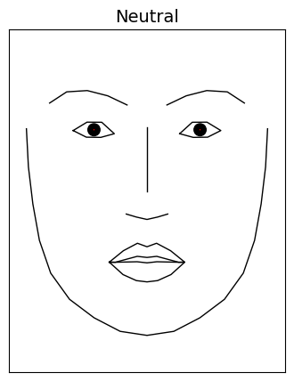
3.2 Plotting AU activations#
Plotting facial expressions from AU activity is just as a simple. Below we increase the intensity of AU1 (inner brow raiser) to 1 before passing it to plot_face().
The default visualization model in py-feat 0.7+ (PLSAULandmarkModel, trained on ~350K CelebV-HQ frames) expects AU intensities on the [0, 1] scale that the xgb AU detector outputs — 0 = AU off, 1 = fully activated. Values larger than 1 push the model past its training distribution and produce cartoonish/exaggerated expressions. (The legacy v1 model used a [0, 5] FACS-style scale; if you load it explicitly with load_viz_model('pyfeat_aus_to_landmarks'), the old AU=3 convention still applies there.)
raised_inner_brow = np.zeros(20)
# Increase AU1 intensity: Inner brow raiser (1.0 = fully activated on xgb's scale)
raised_inner_brow[0] = 1
_ = plot_face(au=raised_inner_brow, title="Raised inner brow")
Ignoring fixed x limits to fulfill fixed data aspect with adjustable data limits.
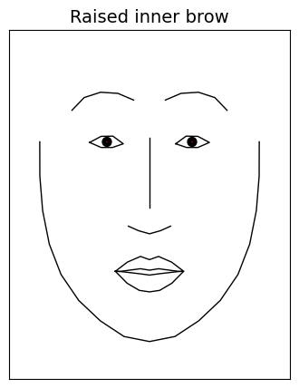
Adding muscle heatmaps to the plot#
We can also visualize how AU intensity affects the underlying facial muscle movement by passing in a dictionary of facial muscle names and colors (or the value 'heatmap') to plot_face().
Below we activate 2 AUs and use the key 'all' with the value 'heatmap' to overlay muscle movement intensities affected by these specific AUs:
# Activate AUs (xgb [0, 1] scale: AU01 partially active, AU11 fully active)
smiling = np.array([.5, 0, 0, 0, 0, 0, 0, 0, 1, 0, 0, 0, 0, 0, 0, 0, 0, 0, 0, 0])
# Overlay muscles
muscles = {'all': 'heatmap'}
_ = plot_face(au = smiling, muscles = muscles, title='Smiling')
Ignoring fixed x limits to fulfill fixed data aspect with adjustable data limits.
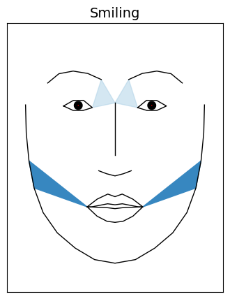
But it’s also possible to arbitrarily highlight any facial muscle by setting it to a color instead. This ignores the AU intensity and useful for highlighting specific facial muscles. Below we highlight two different muscles on a neutral face:
muscles = {'temporalis_r_rel': "red", 'pars_palp_l': 'green'}
_ = plot_face(au=neutral, muscles=muscles)
Ignoring fixed x limits to fulfill fixed data aspect with adjustable data limits.
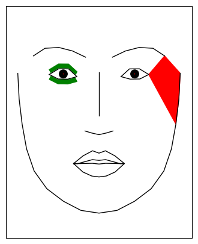
Adding gaze vectors to the plot#
Py-Feat also supports overlaying gaze vectors to indicate where the eyes are looking. By default the eyes are always in a neutral position pointing forward. But it’s possible to pass an array to the gaze argument of plot_face() to move the eyes.
Gaze vectors are length 4 (lefteye_x, lefteye_y, righteye_x, righteye_y) where the y orientation is positive for looking upwards.
# Add some gaze vectors: (lefteye_x, lefteye_y, righteye_x, righteye_y)
gaze = [-1, 5, 1, 5]
_ = plot_face(au=neutral, gaze=gaze, title='Looking up')
Ignoring fixed x limits to fulfill fixed data aspect with adjustable data limits.
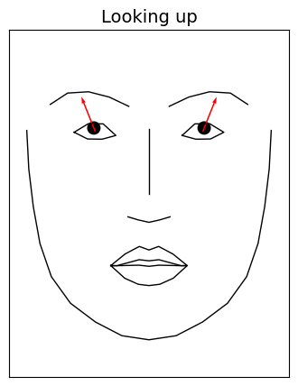
Plotting gaze from real images (L2CS model)#
The synthetic-face example above takes a manually-specified gaze 4-vector.
For real images, py-feat 0.7+ includes the L2CS gaze model
(Abdelrahman et al. 2022, ResNet50) — the default gaze_model for both
Detector and MPDetector. After running detection, the resulting Fex
DataFrame has gaze_pitch and gaze_yaw columns (radians), and
Fex.plot_detections(gazes=True) automatically draws a gaze arrow from each
face’s bbox center in the predicted direction.
from feat.detector import Detector
# Run the Detector on a real image. gaze_model='l2cs' is the default in v0.7.
gaze_detector = Detector(au_model="xgb", emotion_model=None, identity_model=None)
fex_real = gaze_detector.detect(["../../feat/tests/data/multi_face.jpg"])
# fex_real has gaze_pitch / gaze_yaw columns (radians) for each detected face.
print("gaze columns:", fex_real.gaze_columns)
print(fex_real[["gaze_pitch", "gaze_yaw"]])
# plot_detections renders a yellow gaze arrow from each face's bbox center
# in the predicted direction, overlaid on the detected landmarks.
_ = fex_real.plot_detections(faces="landmarks", gazes=True, muscles=False)
/var/folders/t6/l70_tp4s3xx96772lc2504640000gn/T/ipykernel_37395/4027613082.py:4: UserWarning: face_model='retinaface' does not regress 6DoF head pose. Pose columns are populated via the landmarks-to-pose MLP (distilled from img2pose on CelebV-HQ, ~5° avg MAE vs img2pose). PnP-DLT is used as a fallback when the MLP weights aren't available. Use face_model='img2pose' for the slowest, highest-accuracy path. See feat.utils.face_pose_mlp for details.
gaze_detector = Detector(au_model="xgb", emotion_model=None, identity_model=None)
0%| | 0/1 [00:00<?, ?it/s]
0%| | 0/1 [00:00<?, ?it/s]
100%|██████████| 1/1 [00:00<00:00, 1.96it/s]
gaze columns: ['gaze_pitch', 'gaze_yaw', 'gaze_angle']
gaze_pitch gaze_yaw
0 -0.114645 -0.372506
1 -0.211284 -0.346252
2 -0.488092 0.662024
3 -0.599363 0.503887
4 -0.054296 -0.051697
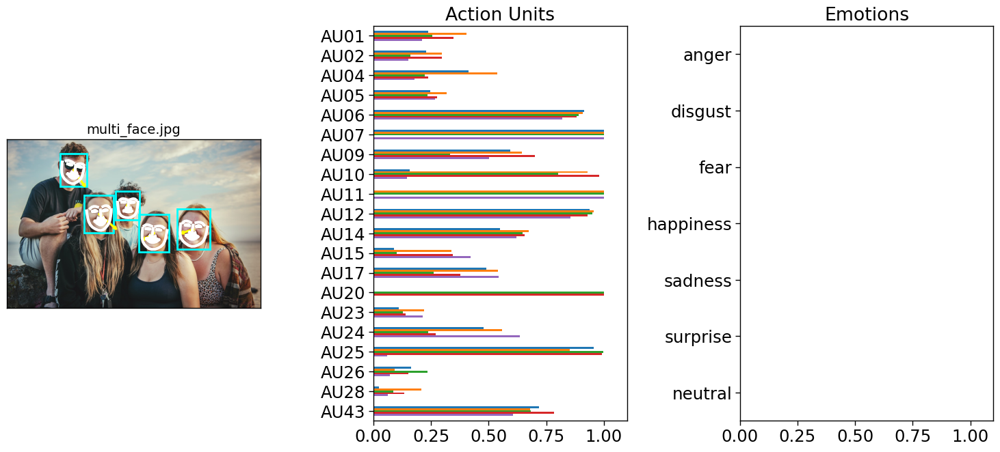
Adding vectorfield arrows to highlight facial movement#
One way we can highlight how a faces change between two expressions is by overlaying a vectorfield of arrows for each facial landmark pointing in the direction of movement from one face to another. To do so, we use the predict() function to get landmark data for each array of AU intensities we want to plot and generate a vectors dictionary with keys for the 'target' and 'reference' faces. Then we can pass this dictionary to the vectorfield argument of plot_face():
from feat.plotting import predict
import matplotlib.pyplot as plt
# Get landmarks
neutral_landmarks = predict(neutral)
raised_inner_brow_landmarks = predict(raised_inner_brow)
# Vectorfield drawn on the *reference* face, pointing toward the *target* face.
# Left panel: arrows start at neutral landmarks and tip at the raised-brow positions.
neutral_to_target = {
"target": raised_inner_brow_landmarks,
"reference": neutral_landmarks,
"color": "blue",
}
# Right panel: arrows start at raised-brow landmarks and tip back at the neutral
# positions — i.e., the reverse of the left panel.
target_to_neutral = {
"target": neutral_landmarks,
"reference": raised_inner_brow_landmarks,
"color": "blue",
}
fig, axes = plt.subplots(1, 2)
# Vectorfield goes from neutral -> target on neutral face
_ = plot_face(ax=axes[0], au=neutral, title="Neutral", vectorfield=neutral_to_target)
# Vectorfield goes target -> neutral on target face
_ = plot_face(
ax=axes[1],
au=raised_inner_brow,
title="Raised inner brow",
vectorfield=target_to_neutral,
)
Ignoring fixed y limits to fulfill fixed data aspect with adjustable data limits.
Ignoring fixed y limits to fulfill fixed data aspect with adjustable data limits.
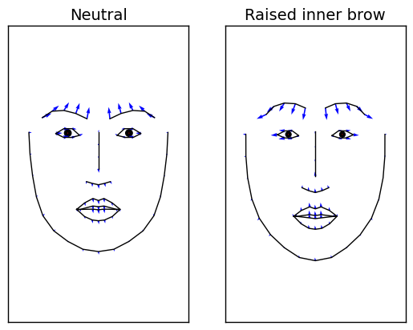
3.3 Animating facial expressions#
Py-Feat includes an animate_face() function which makes it easy to “morph” one facial expression into another by interpolating between AU intensities. This function generates a GIF specified by the save argument. You can use this function in two ways:
Using the
AUkeyword argument and a single scalar value forstartandendPassing in 2 arrays of AU intensities for
startandend
The first style is mostly just a convenient way to visualize changes for a single AU. Below we use this style to animate raising of the inner brow:
from feat.plotting import animate_face
# Just pass in a FACS AU id, in this case we pass in 1 which is the inner brow raiser.
# end=1.0 = fully activated on the v2 model's xgb [0, 1] scale.
animate_face(start=0, end=1, AU=1, title="Raised inner brow", save="AU1.gif")
Ignoring fixed x limits to fulfill fixed data aspect with adjustable data limits.
Now we can load the GIF and see the animation:
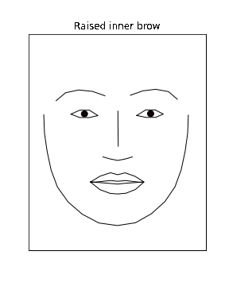
The second style is more flexible and behaves like plot_face(). It’s generally more useful when multiple AUs change together. Below we use this style to visualize 2 AUs changing with different intensities. We also overlay muscle activations which change dynamically in the animation:
# We reuse the AU arrays from above to morph between a neutral and smiling face
animate_face(
start=neutral,
end=smiling,
muscles={"all": "heatmap"},
title="Smiling",
save="smiling.gif",
)
Ignoring fixed x limits to fulfill fixed data aspect with adjustable data limits.
It’s also possible to animate gaze directions using the gaze_start and gaze_end arguments to animate_face(). Here we pass the same neutral expression to start and end so the only thing being animates is gaze direction:
animate_face(
start=neutral,
end=neutral,
gaze_start=[0, 0, 0, 0],
gaze_end=[-1, 5, 1, 5],
title="Looking Up",
save="looking_up.gif",
)
Ignoring fixed x limits to fulfill fixed data aspect with adjustable data limits.
More complex animations#
While animate_face() is useful for animating a single facial expression, sometimes you might want to make more complex multi-face animations. We can do that using plot_face() along with the interpolate_aus() helper function which will generate intermediate AU intensity values between two arrays in a manner that creates graceful animations (cubic bezier easing function).
We can easily make a grid of all 20 AUs and animate their intensity changes one at a time from a neutral facial expression. To generate the animation from matplotlib plots, we use the celluloid library that makes it a bit easier to work with matplotlib animations. It’s also what animate_face uses under the hood:
from feat.plotting import interpolate_aus, load_viz_model # cubic easing interpolation
from celluloid import Camera
# 20 AU ids in the viz model's canonical order (replaces v0.6's feat.utils.RF_AU_presence)
au_ids = load_viz_model().au_columns
# Link AU ids to their descriptions; might be wrong? see:
au_name_map = list(
zip(
au_ids,
[
"inner brow raiser",
"outer brow raiser",
"brow lowerer",
"upper lid raiser",
"cheek raiser",
"lid tightener",
"nose wrinkler",
"upper lip raiser",
"lip corner puller",
"dimpler",
"lip corner depressor",
"chin raiser",
"lip puckerer",
"lip stretcher",
"lip tightener",
"lip pressor",
"lips part",
"jaw drop",
"lip suck",
"eyes closed",
],
)
)
# Start all AUs at neutral
starting_intensities = np.zeros((20, 20))
# And eventually get to 1 (full activation on xgb's [0, 1] scale)
ending_intensities = np.eye(20)
# Define some animation settings
fps = 15
duration = 0.5
padding = 0.25
num_frames = int(np.ceil(fps * duration))
# Add some padding frames so when the animation loops it pauses on the endpoints
num_padding_frames = int(np.ceil(fps * padding))
total_frames = (num_frames + num_padding_frames) * 2
# Loop over each frame of the animation, plot a 4 x 5 grid of faces
fig, axs = plt.subplots(4, 5, figsize=(12, 18))
camera = Camera(fig)
for frame_num in range(total_frames):
for i, ax in enumerate(axs.flat):
au_interpolations = interpolate_aus(
start=starting_intensities[i, :],
end=ending_intensities[i, :],
num_frames=num_frames,
num_padding_frames=num_padding_frames,
)
ax = plot_face(
model=None,
ax=ax,
au=au_interpolations[frame_num],
title=f"{au_name_map[i][0]}\n{au_name_map[i][1]}",
)
_ = camera.snap()
# Create the animation
animation = camera.animate()
animation.save("all.gif", fps=fps)
# Close the source figure — celluloid leaves the figure in an inconsistent
# state after animate()+save() so the inline jupyter display renders as
# empty axis boxes. The all.gif on disk is the working artifact; embed it
# via the next cell's `` markdown reference.
plt.close(fig)
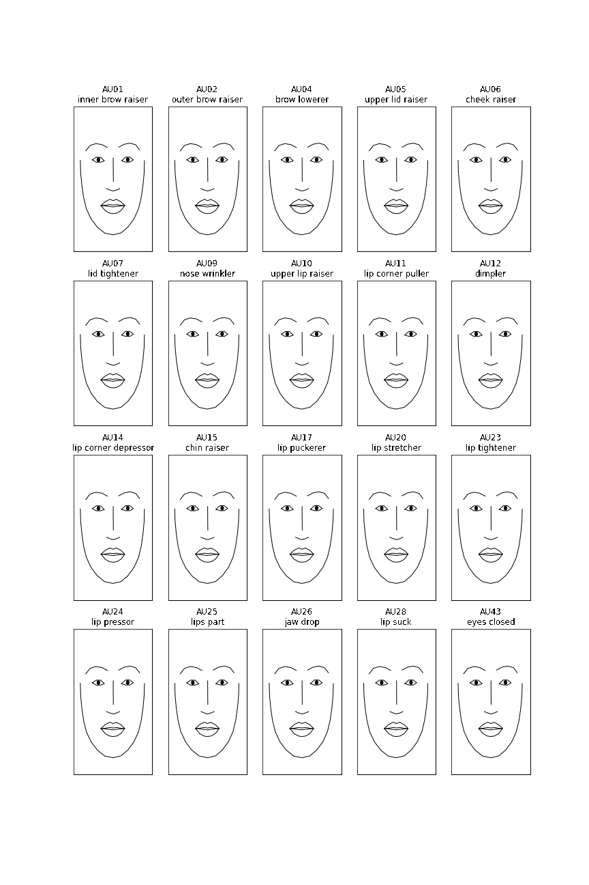
Interactive 2D animation with Plotly#
The GIF-based animations above are great for embedding in static docs.
For live notebook exploration there’s also animate_face_plotly(), which
returns an interactive Plotly Figure with play/pause buttons and a
per-frame slider — you can scrub through the animation by hand, zoom
into a region, and the figure stays interactive throughout. Same
interpolate_aus cubic easing as animate_face under the hood.
from feat.plotting import animate_face_plotly
# Same smile activation as cell 7 — but as an interactive Plotly animation
# you can pan/zoom and scrub frame-by-frame via the slider, no GIF on disk.
fig_2d_anim = animate_face_plotly(
start=neutral,
end=smiling,
num_frames=15,
fps=15,
)
fig_2d_anim.update_layout(width=400, height=500, title_text="Smiling (rest → peak → rest)")
fig_2d_anim.show()
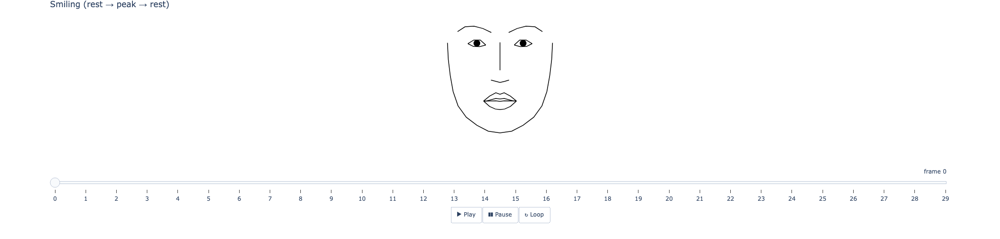
3.4 Visualizing the full 3D MediaPipe FaceMesh from AU intensities#
Beyond the 2D 68-pt landmark plot from plot_face, py-feat ships an opt-in 3D
visualization of the full 478-vertex MediaPipe FaceMesh. Pass AU intensities
to plot_face_mesh() and the model predicts a face-shaped mesh in a pose-canonical frame, then renders it as a 3D wireframe in matplotlib’s 3D backend.
By default plot_face_mesh() draws the lighter canonical contours (lips, eyes,
eyebrows, face oval — ~124 edges). Pass mode='tesselation' to draw the full
MediaPipe tessellation (~2,556 edges), which reveals the nose, cheek, and
internal-face structure and makes subtle AU activations easier to see. It
matches the default in the interactive Plotly backend used in §3.6.
This relies on the au_to_mesh PLS model on HuggingFace
(py-feat/au_to_mesh) — downloaded
on first use, then cached.
import numpy as np
import matplotlib.pyplot as plt
from feat.plotting import plot_face_mesh, load_face_mesh_viz_model
# Load the model once so we can index AU columns by name
mesh_model = load_face_mesh_viz_model()
au_columns = mesh_model.au_columns
print("AU columns the model expects:", au_columns)
# Build three AU vectors: rest, smile (AU12=3), brow lower (AU04=3)
rest = np.zeros(20, dtype=np.float32)
smile = np.zeros(20, dtype=np.float32); smile[au_columns.index("AU12")] = 3.0
brow = np.zeros(20, dtype=np.float32); brow[au_columns.index("AU04")] = 3.0
# Three 3D panels side by side. mode='tesselation' draws the full ~2,556-edge
# MP tessellation (matches plot_face_mesh_plotly's default). Use the lighter
# mode='contours' (~124 edges) if you want a sparser line drawing.
fig = plt.figure(figsize=(15, 5))
for i, (label, au) in enumerate([("Rest", rest),
("AU12 smile", smile),
("AU04 brow lower", brow)]):
ax = fig.add_subplot(1, 3, i + 1, projection="3d")
plot_face_mesh(au=au, ax=ax, model=mesh_model, mode="tesselation")
ax.set_title(label)
plt.tight_layout()
AU columns the model expects: ['AU01', 'AU02', 'AU04', 'AU05', 'AU06', 'AU07', 'AU09', 'AU10', 'AU11', 'AU12', 'AU14', 'AU15', 'AU17', 'AU20', 'AU23', 'AU24', 'AU25', 'AU26', 'AU28', 'AU43']
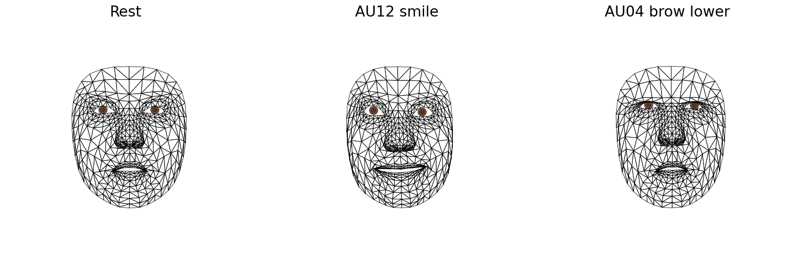
3.5 Bridging 68-pt landmarks to the 3D mesh#
If you already ran the standard Detector (img2pose + mobilefacenet 68-pt) on
an image, you can convert those 2D landmarks into a 478-vertex 3D mesh using
the predict_mesh_from_dlib68 bridge. Internally, the function aligns your raw
landmarks to a saved reference frame (Procrustes), applies a PCA-bottleneck
linear regression, and reshapes the output into a (478, 3) mesh in the same
canonical-frame coordinates as the AU→mesh model.
The bridge model lives at py-feat/landmarks68_to_mesh478
and achieves OOS R² ≈ 0.48 on held-out videos — substantially better than
AU → mesh (R² ≈ 0.24) because dlib landmarks share spatial information with
the MP mesh that 20 AU intensities cannot encode.
from feat.detector import Detector
from feat.plotting import predict_mesh_from_dlib68
# Run the standard Detector on a test image
detector = Detector(au_model="xgb", emotion_model=None, identity_model=None)
fex = detector.detect(["../../feat/tests/data/single_face.jpg"])
# Use the unified accessor to get dlib-68 landmarks (works on both Detector
# and MPDetector Fex objects — see Fex.landmarks_dlib68_xy)
x, y = fex.landmarks_dlib68_xy()
landmarks_68 = np.column_stack([x[0], y[0]]) # shape (68, 2)
# Bridge to the 3D mesh, then render via plot_face_mesh's mesh= path
mesh = predict_mesh_from_dlib68(landmarks_68)
print("predicted mesh shape:", mesh.shape)
fig = plt.figure(figsize=(5, 5))
ax = fig.add_subplot(111, projection="3d")
plot_face_mesh(mesh=mesh, ax=ax, mode="tesselation")
_ = ax.set_title("3D mesh reconstructed from Detector 68-pt landmarks")
/var/folders/t6/l70_tp4s3xx96772lc2504640000gn/T/ipykernel_37395/2733464272.py:5: UserWarning: face_model='retinaface' does not regress 6DoF head pose. Pose columns are populated via the landmarks-to-pose MLP (distilled from img2pose on CelebV-HQ, ~5° avg MAE vs img2pose). PnP-DLT is used as a fallback when the MLP weights aren't available. Use face_model='img2pose' for the slowest, highest-accuracy path. See feat.utils.face_pose_mlp for details.
detector = Detector(au_model="xgb", emotion_model=None, identity_model=None)
0%| | 0/1 [00:00<?, ?it/s]
0%| | 0/1 [00:00<?, ?it/s]
100%|██████████| 1/1 [00:00<00:00, 5.51it/s]
predicted mesh shape: (478, 3)
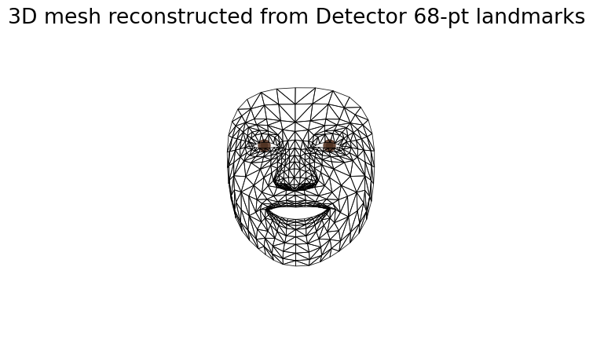
3.6 Interactive 3D visualization with Plotly#
For an interactive 3D viewport you can rotate, pan, and zoom (especially
useful in Jupyter notebooks), plot_face_mesh_plotly() returns a
plotly.graph_objects.Figure instead of a matplotlib axis. The mode='tesselation'
default draws the full 2,556-edge MP tessellation for a dense 3D look; pass
mode='contours' for the same canonical-features wireframe as the matplotlib
version.
The function takes the same au= / mesh= source dispatch as plot_face_mesh,
so you can use it with either AU intensities or a precomputed mesh from the
bridge.
from feat.plotting import plot_face_mesh_plotly
# Same smile activation as 3.4
fig_plotly = plot_face_mesh_plotly(au=smile, mode="tesselation")
fig_plotly.update_layout(width=500, height=500)
fig_plotly.show()
You can also persist the figure to standalone HTML for sharing or to
PNG via Plotly’s write_image() method (which uses kaleido under the hood):
fig_plotly.write_html("/tmp/face_mesh.html")
fig_plotly.write_image("/tmp/face_mesh.png")
For the lighter, contours-only view that matches plot_face_mesh:
plot_face_mesh_plotly(au=smile, mode="contours")
Adding a 3D gaze arrow#
Both plot_face_mesh and plot_face_mesh_plotly accept a gaze=(pitch, yaw)
tuple of head-centric angles (radians), matching the format L2CS outputs in
fex.gaze_pitch / fex.gaze_yaw. A yellow arrow is drawn from the
outer-canthi midpoint in the mesh’s pose-canonical frame, scaled to
gaze_length_frac (default 30%) of face height.
Forward gaze (pitch=0, yaw=0) points along +Z (out of the face), so in the default front-on plotly camera it appears as a small point — drag to rotate the camera if you want to see it as an arrow.
import numpy as np
from feat.plotting import plot_face_mesh_plotly
# Pitch ~+15° (looking up), yaw ~+20° (eyes drift toward viewer's right).
# Pass radians; L2CS detector output is already in radians so you can
# plug fex.gaze_pitch / fex.gaze_yaw straight in. Tesselation mode shows
# enough of the face (nose, cheeks, eyes) for the gaze arrow to read
# anatomically — contours leaves too few landmarks for the eye to be
# obvious.
fig_gaze = plot_face_mesh_plotly(
au=None,
mode="tesselation",
gaze=(np.deg2rad(15), np.deg2rad(20)),
)
fig_gaze.update_layout(width=500, height=500, title_text="Mesh + 3D gaze arrow")
fig_gaze.show()
3.7 Animating the 3D MediaPipe FaceMesh#
The 2D animate_face from §3.3 saves a GIF; the 3D mesh equivalent is
interactive — animate_face_mesh_plotly() returns a Plotly Figure with
play/pause/loop buttons and a per-frame slider, and the camera stays
rotatable while the animation is playing. So you can rotate to a
profile view, hit play, and watch the expression morph from that vantage.
It uses the same interpolate_aus cubic-easing helper as animate_face,
and the same mode='tesselation' / 'contours' knob as
plot_face_mesh_plotly. By default it appends a reverse pass so the
animation returns to the starting expression on each cycle.
Below we animate a smile starting from rest in tesselation mode — the
dense edge set shows the nose, cheek, and inner-face structure that
makes the face recognizable. Pass mode='contours' if you need a
smaller embedded HTML (~500 KB vs several MB for tesselation).
from feat.plotting import animate_face_mesh_plotly
# Animate from rest → smile → rest. Tesselation mode (default) is much
# more recognizable than contours — contours shows only a lips/eyelids/
# brows/face oval, missing nose, cheeks, iris, etc. Tradeoff is HTML
# output size (~5-10 MB for 24 frames vs ~500 KB for contours).
fig_anim = animate_face_mesh_plotly(
start=rest,
end=smile,
num_frames=12,
fps=15,
mode="tesselation",
)
fig_anim.update_layout(width=500, height=600, title_text="AU12 smile (rest → peak → rest)")
fig_anim.show()
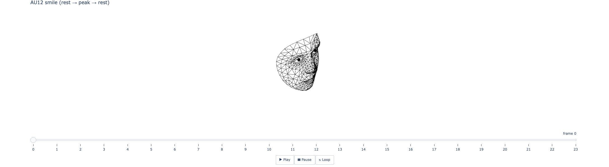